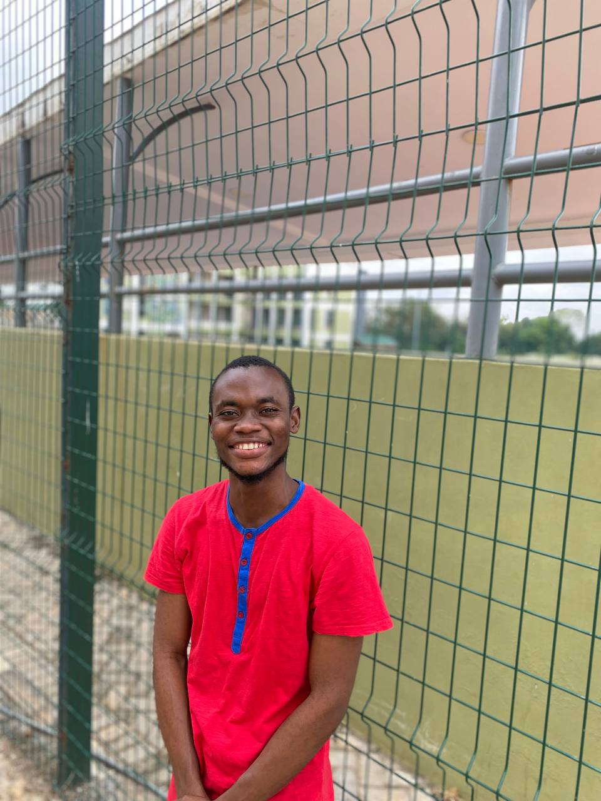

|  | SARFO FOSTERStudent Engineer, Book Enthusiast and a Developer I am a final year student at Kwame Nkrumah University of Science and Technology pursuing a Bachelor's degree in Geomatic Engineering. I have broad knowledge in all aspects of survey works including but not limited to Cadastral surveys and plans, Photogrammetry, Geographic Information Systems (GIS), Remote Sensing, Land and Hydrographic Surveys, Computer Programming, etc. |
| Date | Work |
|---|---|
| 2018-2019 | NSMQ Chairperson and First Contestant for Adanwomase Senior High School |
| 2019-March 2020 | Mathematics Teacher at God's Grace International School |
| April 2020-September 2020 | Facilitator at Resfos Intervention Classes |
| 2020-2021 | Lane Pastor for AGCM at Republic Hall, KNUST |
| March 2022-August 2022 | PhD Questions Administrator |
| October 2023-December 2023 | Intern at CSIR-Building and Road Research Institute |
| Automatic Level Instrument | ⭐⭐⭐⭐⭐ |
| Unmanned Aerial Vehicle (UAV)/Drone | ⭐⭐⭐⭐ |
| Theodolite | ⭐⭐⭐⭐ |
| Light Distance Meter (LDM) | ⭐⭐⭐ |
| Total Station | ⭐⭐⭐⭐ |
| Global Positioning System (GPS) | ⭐⭐⭐⭐ |
| AutoCAD Map 3D | ⭐⭐⭐⭐⭐ |
| Civil 3D | ⭐⭐⭐⭐⭐ |
| Agisoft Metashape | ⭐⭐⭐⭐⭐ |
| ArcGIS and QGIS | ⭐⭐⭐⭐⭐ |
| Trimble Business Centre | ⭐⭐⭐ |
| HTML | ⭐⭐⭐⭐ |
| CSS | ⭐ |
| Python | ⭐⭐⭐⭐⭐ |
| JavaScript | ⭐ |